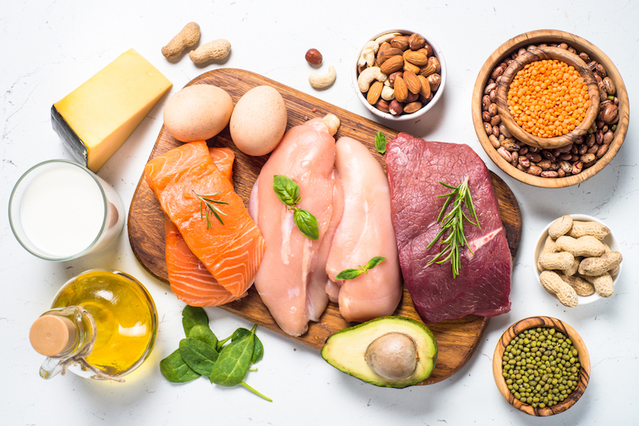
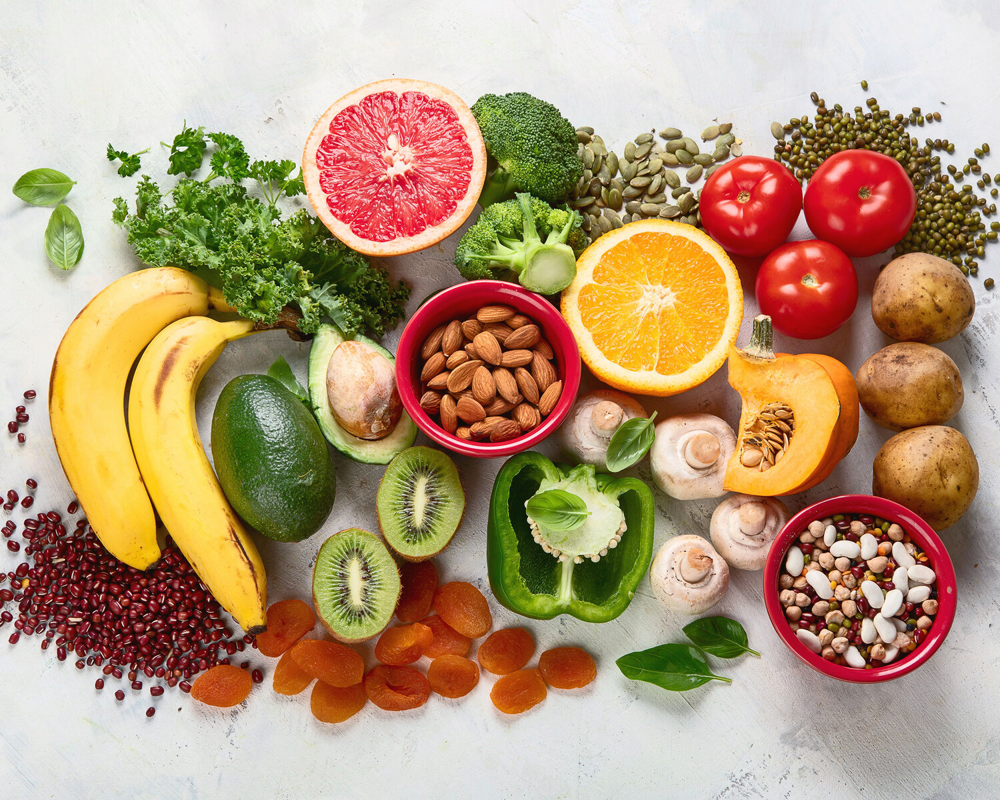

Good Health and well-being
- Introduction
- Key Nutritional Components for Health
- Current Global Nutrition Challenges
- The Impact of Diet on Non-Communicable Diseases
- Sustainable Dietary Patterns
- Policy and Behavioral Interventions
- Future Research Directions
Nutrition and Diet
Introduction
Nutrition and diet form the cornerstone of good health and well-being, directly impacting SDG 3's targets to ensure healthy lives and promote well-being for all. The food we consume influences not only our physical health but also our mental and social well-being throughout life. Proper nutrition is essential for preventing malnutrition in all its forms, reducing the burden of diet-related non-communicable diseases, and supporting overall development and productivity.
Key Nutritional Components for Health

Macronutrients:Carbohydrates, proteins, and fats that provide energy and support bodily functions.

Micronutrients:Vitamins and minerals crucial for immune function, growth, and development.
Fiber:Supports digestive health and helps regulate blood sugar and cholesterol levels.
Hydration:Adequate water intake is essential for all bodily processes.
Current Global Nutrition Challenges
- Micronutrient deficiencies: Iron, vitamin A, iodine, and zinc deficiencies affect billions worldwide, particularly in developing regions
- Overnutrition: Rising obesity rates due to excessive calorie intake and sedentary lifestyles
- Double burden of malnutrition: Many countries face both undernutrition and overnutrition simultaneously
- Diet-related non-communicable diseases: Cardiovascular diseases, diabetes, and certain cancers linked to poor dietary patterns
| Micronutrient | Deficiencies can lead to |
|---|---|
Iron |
|
Vitamiin A |
|
Iodine |
|
Calcium and Vitamin D |
|
Zinc |
The Impact of Diet on Non-Communicable Diseases
- Poor dietary quality is a leading risk factor for premature mortality and morbidity globally.
- High sodium intake and low consumption of whole grains and fruits contribute significantly to disease burden.
- Shifting to balanced diets could prevent millions of premature deaths annually from non-communicable diseases.
Sustainable Dietary Patterns
- Plant-based diets: Emphasizing fruits, vegetables, legumes, nuts, and whole grains.
- Mediterranean diet: Rich in olive oil, fish, and plant foods with moderate dairy and minimal red meat.
- EAT-Lancet reference diet: Designed to meet nutritional needs while staying within planetary boundaries.
- Reduced processed foods: Minimizing intake of sugary beverages, processed meats, and ultra-processed foods.
Policy and Behavioral Interventions
- Nutrition education: Improving awareness of healthy dietary patterns.
- Food labeling: Helping consumers make informed choices.
- Subsidies and taxation: Making healthy foods more affordable and unhealthy options less attractive.
- School feeding programs: Ensuring children have access to nutritious meals.
- Urban planning: Creating environments that support healthy food access and physical activity.
Future Research Directions
- Understanding cultural adaptations of sustainable diets.
- Developing cost-effective nutrition interventions.
- Studying the long-term impacts of dietary changes on population health.
- Exploring technological innovations in food production and distribution.